1. О продукте
ServiceDesk Plus — это платформа управления ИТ-услугами (ITSM) и корпоративного сервисного управления (ESM) от компании ManageEngine (подразделение Zoho Corporation). Продукт используется по всему миру: более 180 000 клиентов ManageEngine, присутствие в 190+ странах. ServiceDesk Plus поддерживает лучшие практики ITIL®, управление инцидентами, проблемами, изменениями, релизами, активами, каталог услуг, CMDB и проектами.
Продукт поставляется в трёх редакциях (Standard, Professional, Enterprise) и может разворачиваться как в облаке (SaaS), так и локально (on-premises). Это позволяет выбирать модель лицензирования и размещения под задачи организации.
Основные требования, которым соответствует продукт:
Интерфейс и развёртывание
Веб-интерфейс с локализацией (в т.ч. на русский), размещение On-Premise и в облаке, лицензии только для техников (количество пользователей-клиентов не ограничено).
REST API и интеграции
Открытый REST API ServiceDesk Plus обеспечивает бесшовную интеграцию с ERP, CRM, системами мониторинга и другими внешними приложениями, позволяя использовать платформу как центральный оркестратор сквозных процессов.
Доступ и идентификация
Поддержка SSO и веб-сервисов, работа на мобильных устройствах и наличие мобильного приложения.
Настройка и кастомизация
Редактирование процессов и объектов — в графическом интерфейсе (drag & drop); для глубокой кастомизации доступны пользовательские функции и скрипты (на базе поддерживаемых технологий).
 Скриншот: интерфейс (images/Interface SDP.png)
Скриншот: интерфейс (images/Interface SDP.png)
2. Три редакции продукта
Официально предлагаются три редакции с чётким разграничением возможностей.
| Редакция | Основной фокус | Ключевые возможности | Для кого |
|---|---|---|---|
| Standard | Сервис-деск (help desk) | Управление инцидентами, портал самообслуживания, база знаний, SLA, отчёты, многоплощадочная поддержка, автоназначение заявок, интеграция с AD/LDAP, API. Без управления активами. | Небольшие команды, базовый приём и обработка заявок. |
| Professional | Сервис-деск + активы | Всё из Standard + управление ИТ-активами, автообнаружение устройств, сканирование по агентам и по сети, закупки и договоры, отчёты по активам. CMDB — как дополнение. | Организации, которым нужен учёт активов и лицензий вместе с заявками. |
| Enterprise | Полный ITSM | Всё из Professional + управление проблемами, управление изменениями и релизами, каталог услуг с многоуровневыми согласованиями, управление ИТ-проектами, полноценная CMDB. | Крупные организации и предприятия с полным циклом ITIL и проектами. |
Во всех редакциях доступны: преобразование писем в заявки (email-to-ticket), интеграция с Active Directory/LDAP, поддержка нескольких порталов (ESM — корпоративное сервисное управление), SLA, база знаний, портал самообслуживания, отчёты и API. Аддон UEM Remote Access Plus (удалённый доступ к рабочим станциям) доступен в Professional и Enterprise версиях. Ограничения по числу активов (узлов) зависят от редакции и размера лицензии.
Функционал
Управление инцидентами
Приём и маршрутизация
- Регистрация обращений по нескольким каналам: портал самообслуживания, почта, телефон, системы мониторинга (в т.ч. Zabbix и др.).
- Настройка правил обработки почтовых уведомлений: регистрация нового обращения, переписка в рамках открытой заявки, создание заявок от систем мониторинга.
- Связывание обращений с элементами и категориями CI в CMDB.
- Настраиваемый жизненный цикл заявки, автоматическое назначение техников по правилам и балансировка нагрузки.
- Классификация по категориям, влиянию и срочности.
- Оператор задач в заявке.
Эскалация, SLA и удобство работы
- Автоматизация эскалации (функциональная и иерархическая).
- Согласования на портале и по электронной почте.
- SLA по времени реакции и решения с эскалациями и уведомлениями.
- Выделение заявок цветом в зависимости от оставшегося времени по SLA.
- Поиск и фильтрация списков заявок.
- Интеграция с базой знаний и рекомендация статей БЗ при регистрации заявки пользователем.
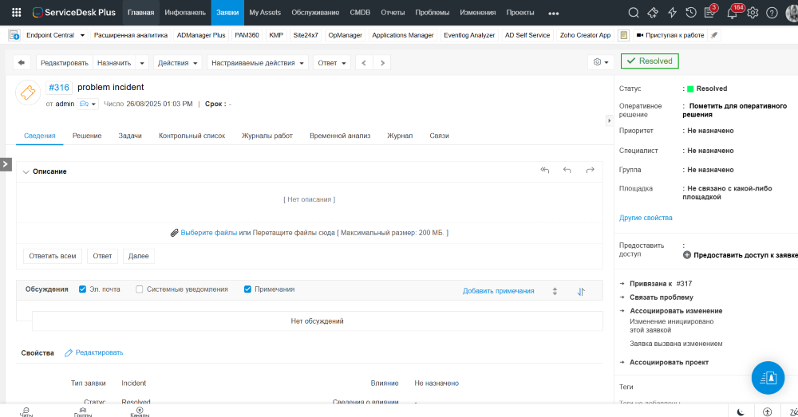
Скриншот: список заявок / карточка инцидента (images/incidents.png)Раскрыть больше скриншотов
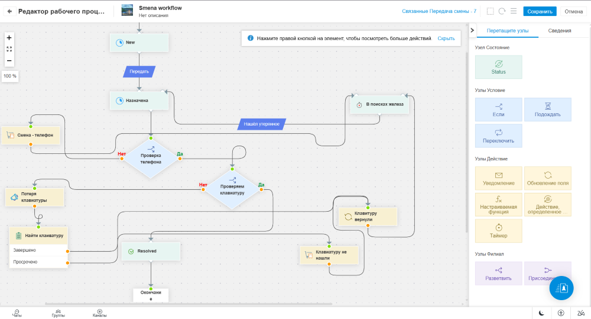
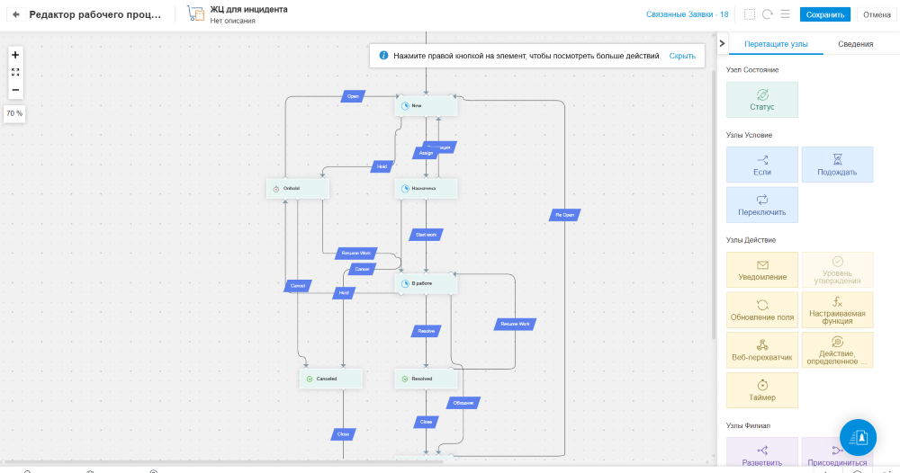
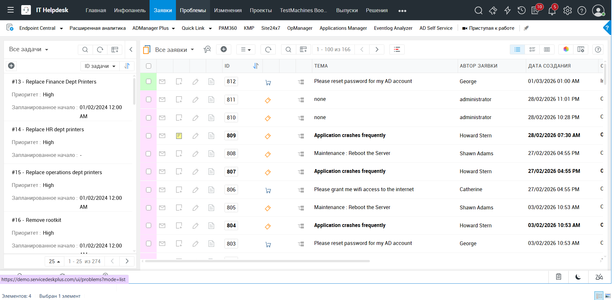
Управление активами (ITAM)
Обнаружение и учёт
- Обнаружение устройств по сети и по агентам (Windows, macOS, Linux).
- Учёт оборудования и ПО, управление лицензиями и соответствием.
- Связь активов с заявками и CMDB для анализа влияния сбоев и планирования изменений.
Закупки и договоры
- Управление закупками и договорами.
- Напоминания об истечении гарантий и контрактов.
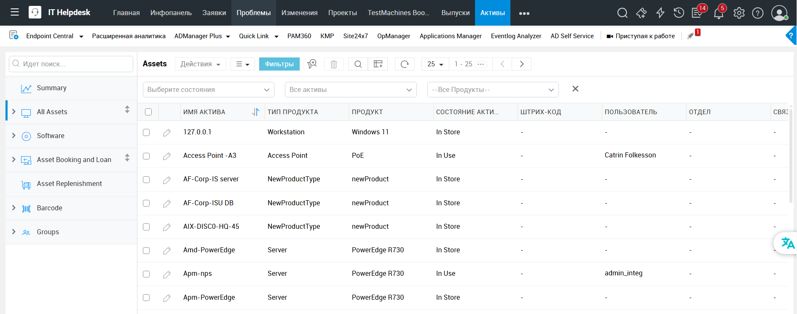
Скриншот: активы (images/assets.png)CMDB (база конфигураций)
Модель и визуализация
- Ведение CMDB с различными типами связей CI, атрибутами, классификаторами и статусами (жизненный цикл CI).
- Визуализация взаимосвязей конфигурационных единиц.
- Динамическое взаимодействие с деревом (развёртка/свёртка, переход на нужный уровень).
Расчёт стоимости и использование
- Расчёт и просмотр TCO для конфигурационных единиц.
- Автоматизация расчёта стоимости оказания услуг в разрезе месяца и года.
- Использование CMDB при анализе инцидентов, проблем и изменений для принятия решений по влиянию на инфраструктуру.
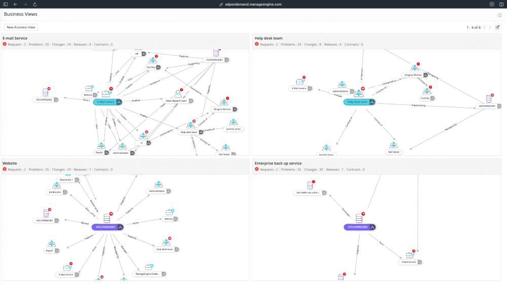
Скриншот: карта связей CMDB (images/cmdb.png)Раскрыть больше скриншотов
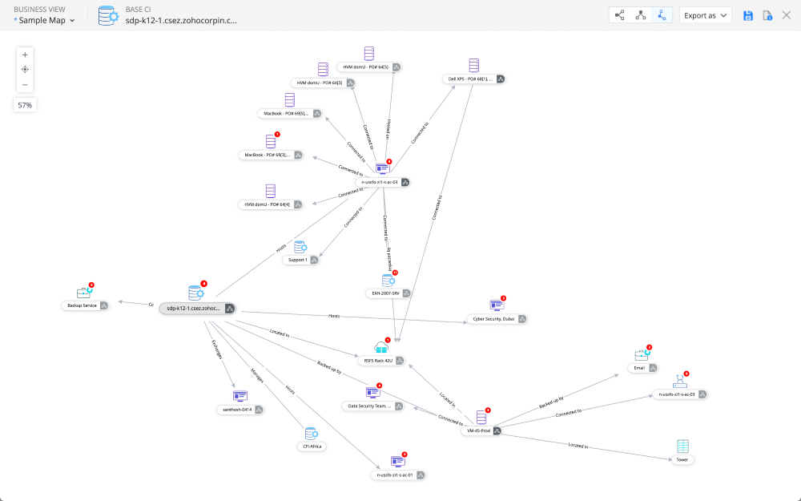
Каталог услуг
Публикация и привязки
- Публикация ИТ- и бизнес-услуг на портале самообслуживания с настраиваемыми шаблонами запросов.
- Привязка каталога к CMDB.
- Привязка контрактов к услугам (расчёт стоимости предоставления услуг).
Согласования и доступ
- Многоуровневые согласования, SLA и задачи по каждому типу услуги.
- Персонализированный доступ к каталогу по ролям и правам.
- Возможность создания обращения или инцидента по доступным пользователю услугам.
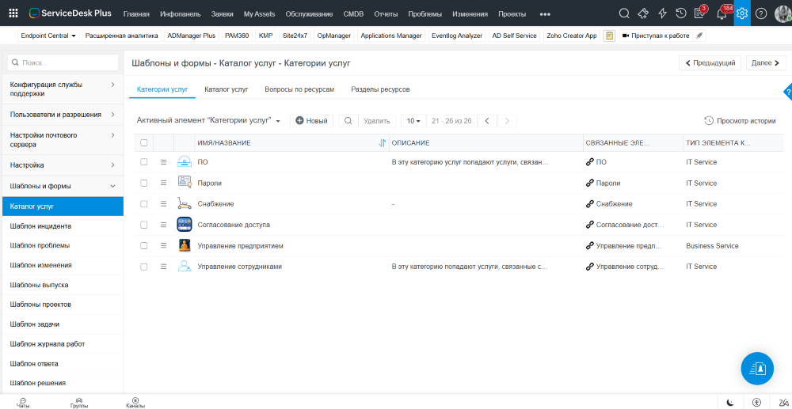
Скриншот: каталог услуг (images/catalog.png)Управление изменениями и релизами
Изменения
- Типы изменений (стандартные, срочные, критичные) с отдельными рабочими процессами.
- Визуальный конструктор этапов, согласований и уведомлений.
- CAB, планы внедрения и отката.
- Календарь изменений и проверка конфликтов.
Релизы
- Управление релизами с шаблонами и этапами.
- Связь релизов с изменениями и активами.
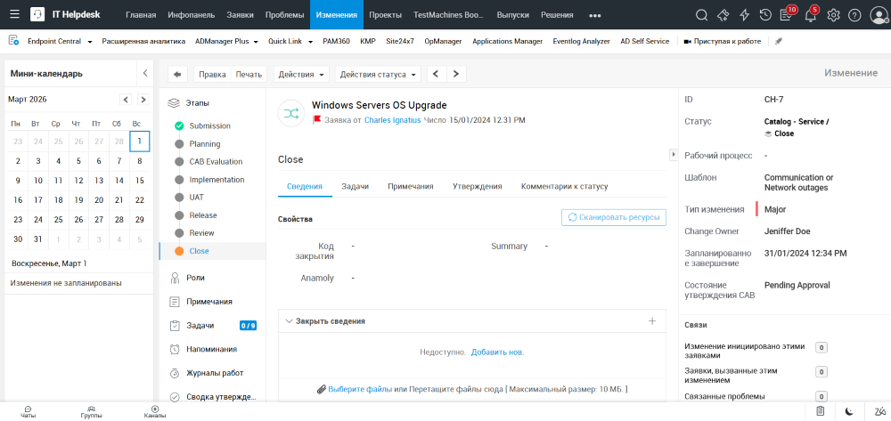
Скриншот: процесс изменения (images/changes.png)Раскрыть больше скриншотов
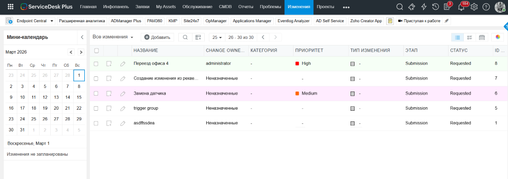
База знаний и портал самообслуживания
База знаний
- База знаний на портале самообслуживания с полнотекстовым поиском, категориями и процессом согласования статей.
- Рекомендация статей БЗ при регистрации заявки пользователем.
- Публикация решений на портале для снижения потока типовых заявок.
Портал и интерфейс
- Брендирование и изменение внешнего вида портала.
- Персонализация в зависимости от прав пользователя (роли): доступность и отображение списков услуг.
- События и новости на портале.
- Виджеты, каталог услуг, отслеживание статуса запросов.
- Настройка интерфейса в зависимости от роли пользователя.
- Поддержка мобильных приложений.
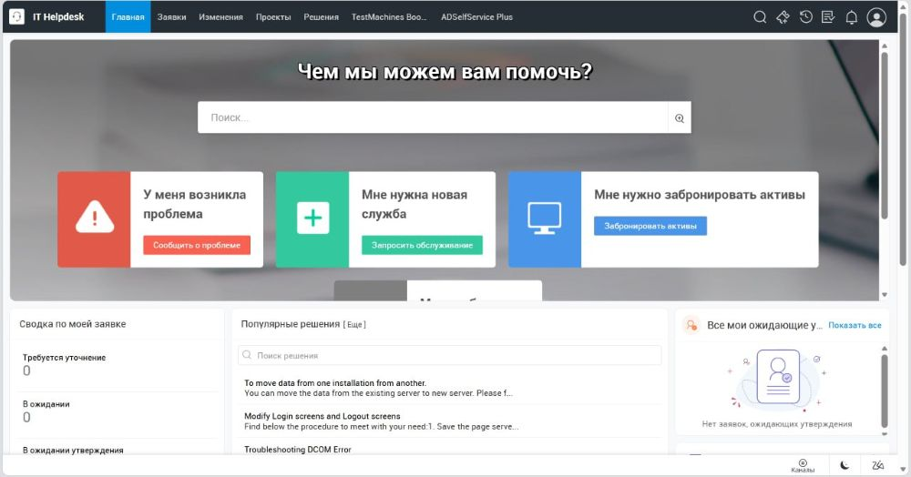
Скриншот: портал (images/portal.png)Отчётность и дашборды
Отчёты
- Формирование отчётов в графическом интерфейсе (настройка мышью).
- Отчёты в рамках разделов (инциденты, активы, изменения, SLA, загрузка техников), настраиваемые в графическом интерфейсе.
- Возможность самостоятельного написания SQL-запросов для отчётов (on-premises).
- Выгрузка отчётов в xls, pdf, xml.
- Единый отчёт по мониторингу SLA всех услуг.
Дашборды и аналитика
- Планировщик рассылки отчётов по почте.
- Интерактивные дашборды с виджетами.
- Интеграция с Zoho Analytics / Analytics Plus для расширенной аналитики.
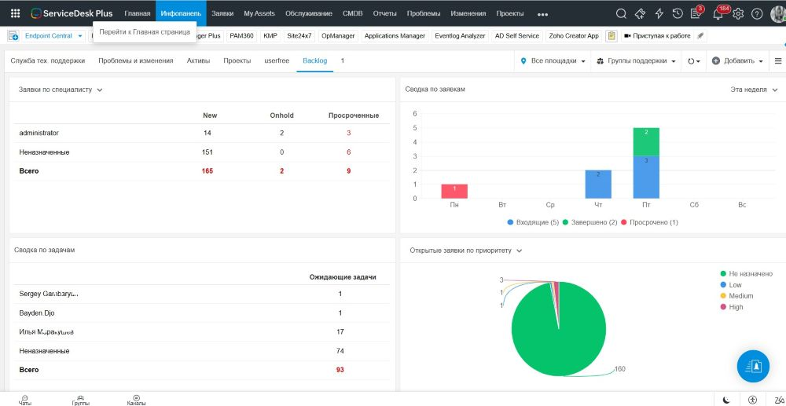
Скриншот: дашборд (images/reports.png)Раскрыть больше скриншотов
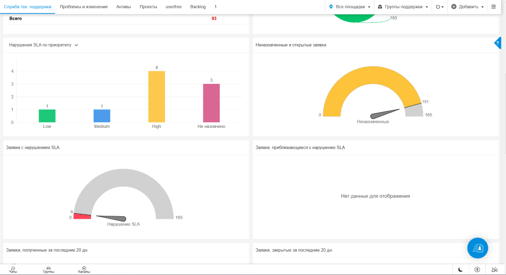
Enterprise Service Management (ESM)
Суть ESM
- Enterprise Service Management — управление корпоративным сервисом в едином информационном пространстве предприятия.
- Одновременная автоматизация нескольких направлений: ИТ-поддержка, оборудование, HR, финансы и др.
- Для каждого отдела или организации создаётся отдельный экземпляр службы поддержки со своими шаблонами, пользователями и рабочими процессами.
- Поддержка методологии ITIL для ИТ-подразделений.
Портал ESM и экземпляры
- Портал ESM — единая консоль, в которой пользователи работают с разными экземплярами служб, создают и обрабатывают заявки, управляют настройками.
- Экземпляры могут работать независимо друг от друга, использовать общие справочники или обмениваться данными внутри системы.
- Каталог ESM: пользователи, экземпляры, права доступа, авторизация.
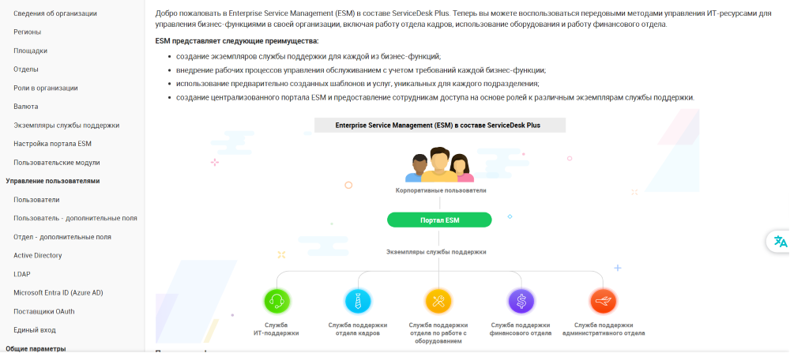
Скриншот: портал ESM / экземпляры служб (images/esm.png)Интеграции
ManageEngine и мониторинг
- Нативные интеграции: OpManager, Endpoint Central (Desktop Central), Applications Manager, ADManager Plus, ADSelfService Plus, Password Manager Pro, Site24x7.
- Настройка интеграции с Zabbix и правил регистрации инцидентов от систем мониторинга.
Бизнес-системы и API
- Интеграция с Jira (создание задач по проектам, получение задач из проектов, создание проектов).
- Бизнес-интеграции: Outlook, Office 365, Microsoft Teams, календарь O365.
- Поддержка WebServices, REST API. Полный доступ к данным и автоматизации через API.
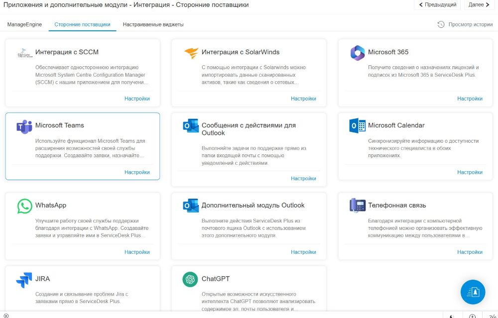
Скриншот: настройки интеграций (images/integrations.png)Раскрыть больше скриншотов
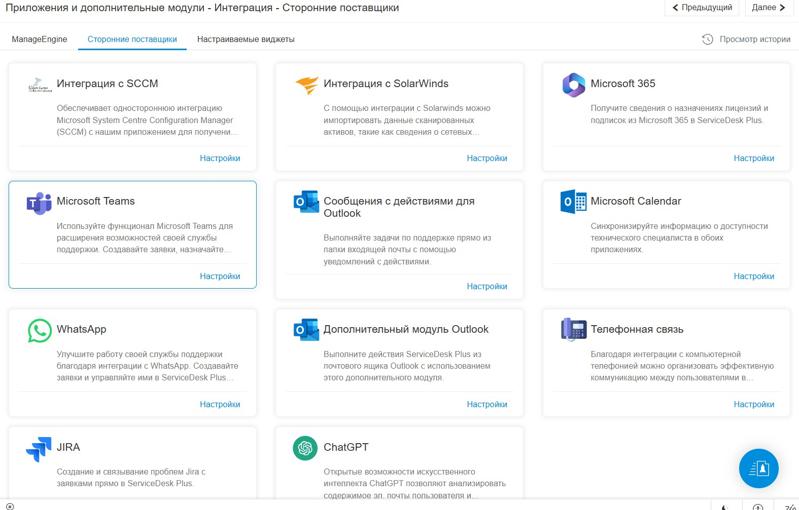
3. Облачное и локальное размещение
ServiceDesk Plus доступен в двух вариантах развёртывания: облако (SaaS) и локальное развёртывание (on-premises).
Облако (Cloud)
Подписка (ежемесячная или годовая), хостинг в дата-центрах ManageEngine в разных регионах (США, ЕС, Австралия, Индия, Китай, Япония, Канада, Великобритания, Саудовская Аравия и др.).
Локальное развёртывание (On-Premises)
Установка на собственной инфраструктуре заказчика. Лицензия — бессрочная (perpetual) или годовая (подписка). Полный контроль над данными и настройками. Часть возможностей ИИ и отдельные облачные интеграции в on-premises могут отличаться. Требования: ОС Windows или Linux; СУБД по документации.
4. ServiceDesk Plus MSP
ServiceDesk Plus MSP — отдельный продукт для провайдеров управляемых услуг (MSP). Единая платформа объединяет возможности ITSM (в т.ч. ITAM, CMDB) и элементы PSA: настройка и предоставление сервисов для нескольких заказчиков с учётом прибыльности.
- Мультитенантность: отдельные настройки автоматизации, SLA, базы знаний, активы и отчёты для каждого клиента.
- Мультисайтовая поддержка: управление несколькими площадками заказчиков из одной консоли с разными часовыми поясами, правилами и SLA.
- Биллинг: предопределённые сервисные планы и рекуррентные платежи.
- Интеграция с RMM-инструментами ManageEngine (например, RMM Central): единая консоль для мониторинга и сервис-деска.
- Автоматизация: визуальные конструкторы рабочих процессов без кода.
- ИИ-агент Zia доступен как первая линия поддержки (функция не адаптирована для российского рынка).
MSP доступен в облаке и on-premises; редакции и цены отличаются от «обычного» ServiceDesk Plus. Подробности: manageengine.com/products/service-desk-msp
5. Преимущества и ключевые особенности ServiceDesk Plus
- Масштабируемость по зрелости: три редакции позволяют начать с help desk и поэтапно подключать активы, затем изменения, проблемы, каталог услуг, проекты и CMDB.
- Неограниченное количество конечных пользователей и согласующих: лицензия считается на техников; запросчики и согласующие не лицензируются отдельно.
- Готовая автоматизация: почтовые правила, бизнес-правила, триггеры, правила полей и форм (создание и редактирование произвольных полей формы в зависимости от выбранных значений), настраиваемый жизненный цикл заявки, планировщик задач; для сложных сценариев — пользовательские функции и скрипты.
- Персонализация и настройка: интерфейсы в зависимости от пользователя, роли и места работы; управление ролями и правами доступа (по ролям и услугам); управление данными (услуги, роли, пользователи, группы); расширяемость системы.
- Интеграции: нативные интеграции с продуктами ManageEngine (OpManager, Endpoint Central, ADManager Plus, ADSelfService Plus, Password Manager Pro, Site24x7 и др.), а также с Outlook, Office 365, Microsoft Teams, Jira, полный доступ — через REST API.
- ИИ и аналитика: умная категоризация заявок, предсказание приоритета, автоназначение техников, виртуальный агент Zia, интеграция с Zoho Analytics/Analytics Plus. (Функции помощника Zia пока не адаптированы для использования в России.)
- Признание рынка: ManageEngine фигурирует в отчётах Gartner (Magic Quadrant для ITSM) и Forrester (Total Economic Impact).
- Функциональное мобильное приложение для техников и пользователей (в том числе от российских разработчиков).
Ограничения и особенности
Часть продвинутых возможностей ИИ и интеграций доступна только в облачной версии или в определённых регионах. В редакции Standard нет управления активами и аддона UEM Remote Access Plus (удалённый доступ к рабочим станциям).
Глоссарий
Краткие пояснения терминов, используемых в документе.
| Термин | Пояснение |
|---|---|
| ITSM | Управление ИТ-услугами (IT Service Management) — совокупность процессов и практик для проектирования, предоставления и поддержки ИТ-услуг. |
| ESM | Корпоративное сервисное управление (Enterprise Service Management) — распространение подходов ITSM на другие подразделения (HR, финансы, эксплуатация и т.д.). |
| ITIL® | Набор лучших практик по управлению ИТ-услугами; ServiceDesk Plus поддерживает процессы, согласованные с рекомендациями ITIL. |
| CMDB | База данных управления конфигурацией (Configuration Management Database) — хранилище элементов конфигурации (CI) и связей между ними для учёта инфраструктуры и влияния изменений. |
| SLA | Соглашение об уровне обслуживания (Service Level Agreement) — зафиксированные сроки реакции и решения заявок с эскалацией при нарушении. |
| UEM Remote Access Plus | Аддон удалённого доступа к рабочим станциям из консоли ServiceDesk Plus: удалённое управление, передача файлов, запись сессии, чат с пользователем, Wake on LAN; использует единый агент Endpoint Central (ранее Desktop Central). Доступен в редакциях Professional и Enterprise. |
| SaaS | Программное обеспечение как услуга — облачное развёртывание с подпиской, без установки на собственных серверах. |
| On-premises | Локальное развёртывание — установка и эксплуатация продукта на инфраструктуре заказчика. |
| MSP | Managed Service Provider — провайдер управляемых услуг, оказывающий ИТ-услуги нескольким заказчикам на проактивной основе; для них предназначена отдельная версия ServiceDesk Plus MSP. |
Источники и полезные ссылки
- Официальная страница продукта: manageengine.com/products/service-desk
- Сравнение редакций: sdp-editions.html
- On-Premises vs. Cloud: hosted-on-premise-vs-saas-cloud.html
- ServiceDesk Plus MSP: service-desk-msp
- Клиенты: manageengine.com/customers.html
- Официальный дистрибьютор и интегратор решений ManageEngine в России, Армении и Белоруссии: agneko.com